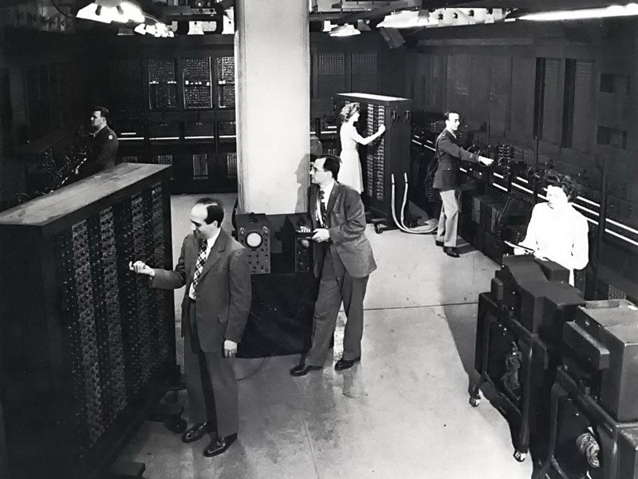

Charles Babbage's Difference Engine
| Year | Event | Year | Event | Year | Event |
| 1937 | George Stibitz uses relays for a demonstration adder | 1939 | Hewlett-Packard is founded | 1940 | The Complex Number Calculator (CNC) is completed |
| 1941 | Konrad Zuse finishes the Z3 Computer | 1942 | The Atanasoff-Berry Computer (ABC) is completed | 1943 | Bell Labs Relay Interpolator is completed |
| 1944 | Harvard Mark 1 is completed | 1945 | John von Neumann writes First Draft of a Report on the EDVAC | 1948 | First Computer Program to Run on a Computer |
| 1949 | EDSAC completed | 1954 | IBM 650 magnetic drum calculator introduced | 1974 | Xerox PARC Alto introduced |
| 1975 | Ed Roberts introduced first personal computer the KENBAK-1 | 1981 | The first portable computer Osborne I was released | 1994 | IBM introduced the first notebook The Apple 1 |
The time it took computers to develop to the stage that we know today is a longer journey than most could predict. The invention of modern computers is recent, however it can be said that primitive forms of computers existed in the ancient times. To give an example, the abacus was one of the earliest discovered devices used for computations. The abacus is a kind of data storage system where a human must be present for it to be a complete computational machine. This is because a human operates the computations in an abacus. Relatively, the word "computer" was first recorded as being used in 1613 and was originally used to describe a human who performed calculations or computations.
As electricity and electronics were invented the development of computers accelerated. One of the front runners, Charles Babbage had many contributions to the earliest concept of modern computers. In 1822, Charles Babbage conceptualized and began developing the Difference Engine. Which was considered to be the first automatic computing machine. The Difference Engine was capable of computing several sets of numbers and making hard copies of the results. Babbage received some help with development of the Difference Engine from Ada Lovelace. Lovelace was considered by many to be the first computer programmer because of her work and notes on the Difference Engine. Due to funding issues, Babbage was never able to complete a full-scale functional version of the machine. In 1837, the first general mechanical computer was proposed by Charles Babbage which he called the Analytical Engine. The Analytical Engine contained parts like Arithmetic Logic Unit (ALU), basic flow control, punch cards and integrated memory. It is the first general-purpose computer concept invented. Again due to funding issues, this computer was also never built. In 1910, Henry Babbage, his son, was able to complete a part of the machine and which was able to perform basic calculations.
| |
| Charles Babbage's Difference Engine |
The first electro-mechanical binary programmable computer, and the first really functional modern computer named Z1 was created by German Konrad Zuse between 1936 and 1938. In 1936, the Turing machine was proposed by Alan Turing which formed the foundation for theories about computing and computers. The Turing machine made the first concepts of what is considered a modern computer. The machine was a device that printed symbols on paper tape in a manner that emulated a person following a series of logical instructions.
The development of computers continued at an increasing rate as new models were created by scientists around the globe. The hardware of the early models were astonishingly complex and huge. The first electric programmable computer was the Colossus which was developed by Tommy Flowers, and first demonstrated in 1943. The Colossus was created to help the British code breakers read encrypted German messages. Short for Atanasoff-Berry Computer, the ABC began development by Professor John Vincent Atanasoff and graduate student Cliff Berry in 1937. The ABC was an electrical computer that used more than 300 vacuum tubes for digital computation, including binary math and Boolean logic and had no CPU. The ENIAC was invented by J. Presper Eckert and John Mauchly at the University of Pennsylvania and began construction in 1943 and was not completed until 1946. It occupied about 1,800 square feet and used about 18,000 vacuum tubes, weighing almost 50 tons. Many still consider the ENIAC to be the first digital computer because it was fully functional. The ENIAC is considered to be the first stored program electronic computer. The computer performed its first calculation on May 6, 1949 and was the computer that ran the first graphical computer game, nicknamed "Baby". Around the same time, the Manchester Mark 1 was another computer that could run stored programs. Built at the Victoria University of Manchester, the first version of the Mark 1 computer became operational in 1949. Mark 1 was used to run a program to search for Mersenne primes for nine hours without error on June 16 and 17 that same year.
Soon after, the commercialization of computers began. The first computer company was the Electronic Controls Company and was founded in 1949 by J. Presper Eckert and John Mauchly, the same individuals who helped create the ENIAC computer. The company was later renamed to EMCC or Eckert-Mauchly Computer Corporation and released a series of mainframe computers under the UNIVAC name. First stored program computer, first delivered to the United States government in 1950, the UNIVAC 1101 or ERA 1101 was capable of storing and running a program from memory. In 1942, Konrad Zuse begin working on the Z4 that later became the first commercial computer. The computer was sold to Eduard Stiefel, a mathematician of the Swiss Federal Institute of Technology Zurich on July 12, 1950. In 1953 IBM publicly introduced the 701; its first commercial scientific computer.
|  |
| Public unveiling of ENIAC in 1946 |
As inventions continued, engineers began to corporate new abilities to the computers. MIT introduced the Whirlwind machine in 1955, a revolutionary computer that was the first digital computer with magnetic core RAM and real-time graphics. The Transistorized Experimental computer (TX-O) is the first transistorized computer to be demonstrated in 1956.